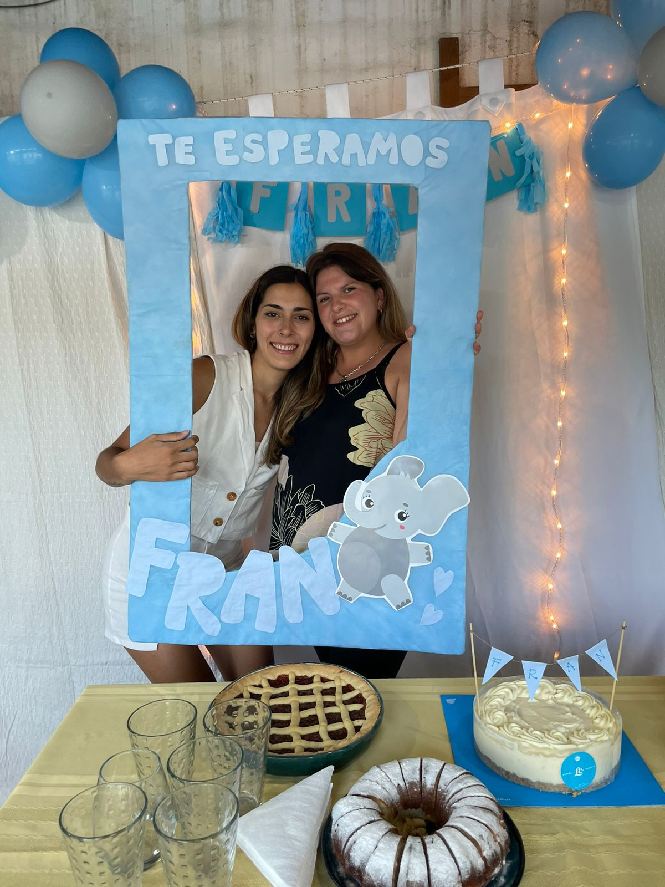
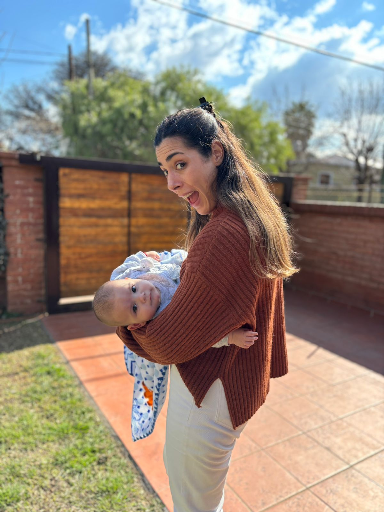
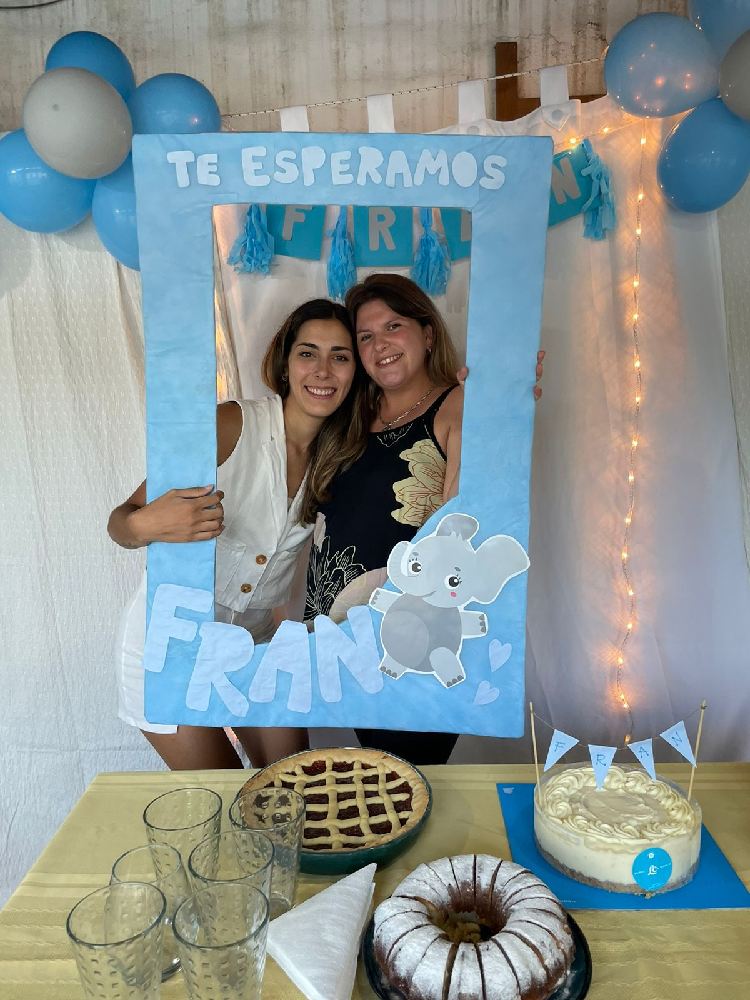
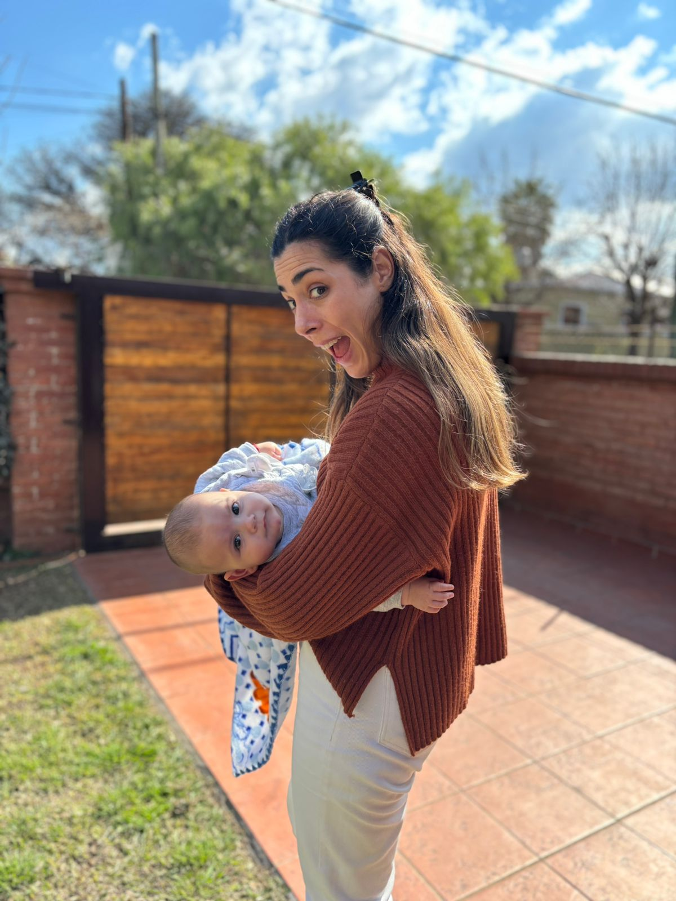

¿Qué pienso de Picu como persona?
Para mi picu es mi hermana, mi pilar más fuerte. Es una presonita muy fuerte, que se banco muchas cosas en la vida, que afronta y sale adelante; es alguien super confiable, sincera y con un hermoso corazón.
¿Cual es el mejor momento de nuestra amistad que tengo de la adolescencia?
Cuando pasabamos un montón de tiempo cantando canciones en su cuarto mientras tocaba la guitarra, canciones que iban desde las religiosas hasta las de las Pastillas del Abuelo. Otros de los momentos que me traen un poco de melancolia fueron cuando comenzamos a salir, que casi siempre terminabamos juntandonos antes las dos y nos planchabamos el pelo, nos sacabamos fotos y hasta aveces clavabamos un karaoke de Romeo Santos.
¿Qué desearia hacer juntas?
- Ir a cenar o almorzar juntas antes que se acabe el año.
- Juntarnos un día y que toques una canción en la guitarra.
- Que podamos lograr coordinar para ir un finde a Yacanto con Emi, Fabri y Fran.